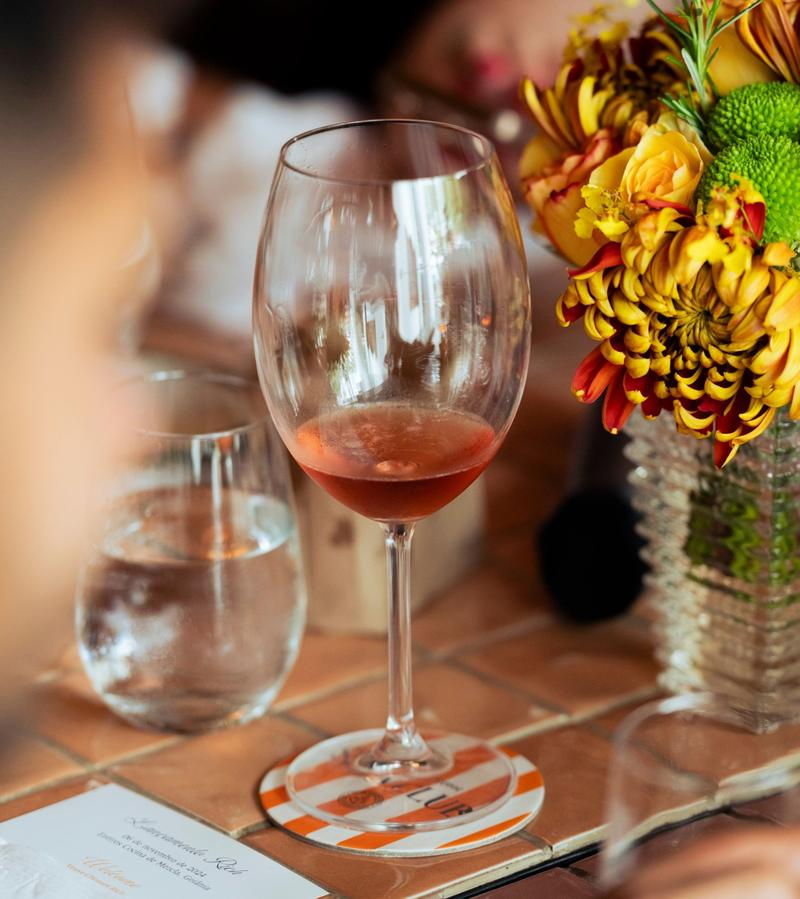

About Ashgrove
Thirty-eight seats, one kitchen.
We cook what arrived that morning.
Chef Nora Ellison writes the menu each week after the farm deliveries, so early corn shows up in July and the last beets in November. When a farm runs out, the menu changes.
“A short menu lets us do each course properly.”Nora Ellison, chef
The chef, story and quote are invented for this sample. On a real site, they come from the owner.

Gallery